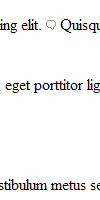
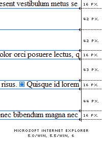
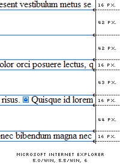

Written by Jeroen Mulder
Return to Guest Demos Return to Explorer Exposed Next IE demo
Introduction
IE/Win continues to amaze us. This demo will describe a bug where the line-height is incorrectly rendered if the line contains a replaced element. Very simply, if the default line-height is changed to a larger value, the line spacing above and below any text line that contains a replaced element, such as a small emoticon, will be half of the spacing seen elsewhere in the text.
Note that IE7 does not show this bug.
- Affected Browsers
-
- Microsoft Internet Explorer 5.01 / Windows
- Microsoft Internet Explorer 5.5 / Windows
- Microsoft Internet Explorer 6
Description
The graphic shows Internet Explorer 6’s inconsistent rendering of the line-height. The line-height is made exceptionally large to exaggerate the effect of the bug, so that the problem is obvious.
The HTML needed to trigger this bug is nothing more than plain text, with a normal inline replaced element, such as an image, within that text. The 100px line-height value is applied to the body element, which should separate the text lines by almost 100px.
body {
line-height: 100px;
}
Strangely enough, this bug is triggered just by the simple presence of any replaced element:
IMG, INPUT, TEXTAREA, SELECT and OBJECT.
- 3.1 Definitions: Replaced Element
- “An element for which the CSS formatter knows only the intrinsic dimensions. In HTML, IMG, INPUT, TEXTAREA, SELECT, and OBJECT elements can be examples of replaced elements. For example, the content of the IMG element is often replaced by the image that the "src" attribute designates. CSS does not define how the intrinsic dimensions are found.”
- http://www.w3.org/TR/REC-CSS2/conform.html#replaced-element
Detailed Description
Further investigation shows that IE6 apparently thinks it has a very good reason for this behaviour. It might seem random at first, but it is not.
As specified by the W3C CSS-2.1 recommendations, the difference between the line-height and font-size is called leading — half of it is called half-leading. A user agent should add half-leading on the top and bottom.
For example, a if a font-size of 12 pixels is defined with a line-height of 20 pixels, then 8 pixels (leading) of space should be added — 4 pixels (half-leading) on the top and bottom.
 

When IE6 encounters a line containing a replaced element, it collapses the half-leading of that line with the half-leading of the preceding and following line.
Is there a fix?
Currently there does not seem to be a proper fix for this IE6 bug. The bug itself is awkward and very straight-forward, to say the least.
Once the element is taken out of flow, either by positioning it absolutely or by floating it, the bug does not occur. Considering none of us really has an idea how IE calculates the line height and the fact that the situation can’t get any more basic, it seems as if the bug cannot be fixed at the source. However, in certain situations you can get it right.
Hacking Away
By carefully applying a top and bottom margin to the replaced element one can force the line-height to be about the same as intended. Unfortunately, this solution isn’t very universal and relies on a couple of simple requirements:
- The height of the replaced element needs to be known at all times.
- The height of all the replaced elements of the same type needs to be almost equal if you want to make use of the same CSS classes.
By applying the following CSS on our demo page we get this new demo, which puts everything back into place.
/* Holly Hack: Hide From IE5/Mac \*/
* html img {
margin: 45px 0;
vertical-align: middle;
}
* html input {
margin: 39px 0;
vertical-align: middle;
}
/* Holly Hack: End Hide From IE5/Mac */
The top and bottom margin simulate the needed half-leading for IE/Win. Their values are calculated by subtracting the element’s height from the line-height and dividing it by two.
The vertical-align property is needed to position it correctly.
Finally, we use the hiding hack from the Holly Hack to prevent IE/Mac from applying it as well.
Notice: As of 2008, newer methods are now available to achieve the same results.
Several Notes
Use of such a ridiculously large line-height can be rare. However, this bug is still noticeable—albeit less—when using a more common font-size, line-height and small inline, replaced elements (emoticons, for example).
Throughout the demo pixels are used to define font-size and line-height and measure the distances for the sake of simplicity. It does not matter what type of unit is used to define the line-height. Nor does it matter if a font-size is defined.
Conclusion
Another bug and a strange one at that. Thankfully, the bug doesn’t affect the layout in a terrible way—it’s just annoying if you are a perfectionist. I would have loved to conclude this demo with a real fix. Perhaps some day—until then it remains an issue.